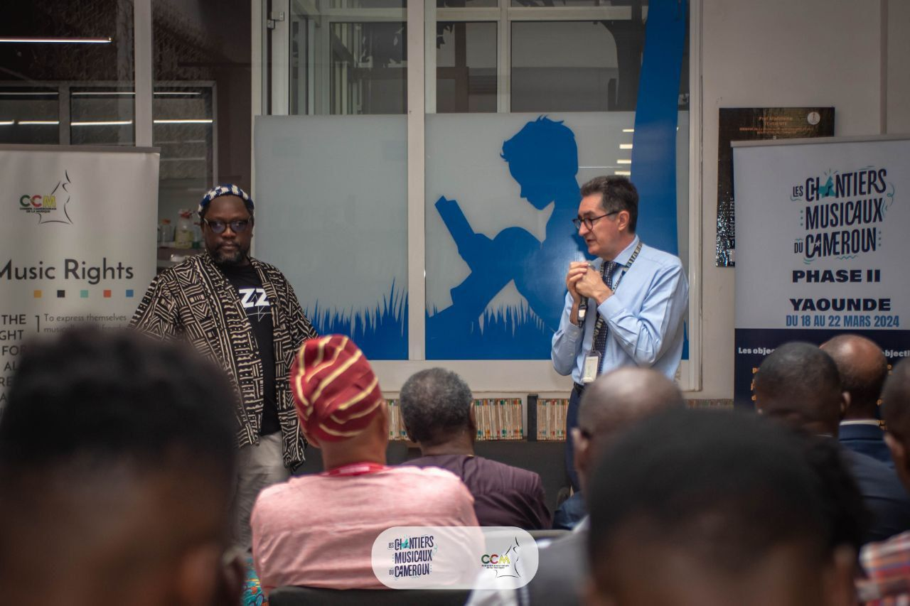
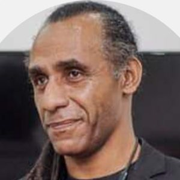
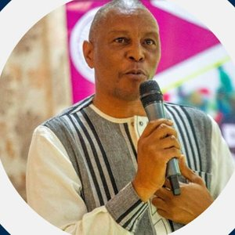

More than six months of consultation in 2024 to assess the sector, strengthen its players and lay the foundations of a development plan. Supported by the French Embassy in Cameroon and the Institut français, through the Team France Fund.
64
professionals from all ten regions
3
stages in Douala and Yaoundé
21
speakers featured in phase 2
144
pages in the development plan
How it unfolded
Three stages, from assessment to strategy
Stage 01 · Douala · 8 to 10 February 2024
Assessing the situation
64 professionals from all ten regions, working in production, promotion and broadcasting, met in workshops by major cultural area: the North, the Grassfields, the forest peoples and the Greater Sawa. The goal: understand how the sector works and identify what is holding it back.
21 producers
20 promotion professionals
23 broadcasting professionals

Stage 02 · Yaoundé · 18 to 22 March 2024
Capacity building
Launched on 18 March 2024 at the Institut français library in Yaoundé, alongside the Yaoundé Music Expo, the second stage offered more than 16 workshops: music project management, digital marketing, distribution, copyright and related rights, entrepreneurship, broadcasting strategies.
More than 16 workshops
12 international experts
25 Cameroonian trainers
Stage 03 · Yaoundé · June 2024
Presenting the findings
The Introduction to the Development Plan of the Cameroonian Music Industry was presented to public authorities, institutions and professional organisations, alongside Zone by DOMAF, as a contribution to a national cultural policy.
144-page document
French and English editions
Next step: a full strategic plan
Phase 2 · Yaoundé, 18 to 22 March 2024
The speakers
Cameroonian and international experts, artists, managers, lawyers, journalists and business leaders shared their experience with the selected professionals.
Official launch of phase 2, 18 March 2024, Institut français, Yaoundé.
Cameroon
Freddy Tchala
Country Manager, Activa Assurance
Cameroon
Walter Ebelle Eboumbou
Managing Director of Keyzit Cameroun, founder of Arise Entertainment
Cameroon
Robert Ekotto
Head of Sponsorship, Orange Cameroun
Cameroon
Richard Eboa
Artist, manager and consultant
Cameroon
Daniel Ndiewan
Manager at FOCEP S.A.

Cameroon
Mike Epaka
Marketing and advertising consultant
Cameroon
Lionel Tousse
CEO of the ICONProd group, founder of the ICON Fusion label
Cameroon
Jean Eudes Biem
Cerdotola
Cameroon
Jacques Mouen
Strategic Marketing Leader
Côte d'Ivoire
Inès Abichou
Abidjan
Cameroon
Charles Elame
Marketing and go-to-market consultant
Nigeria
Ruby Gyang
Singer-songwriter
Martinique
Mylène Emica
Artistic director of Seize mètres carrés

Guinea
Mory Touré
Cultural journalist, founder of Radio Afrika
Nigeria
Kayode Adebayo
Founder of Ckrowd.com, president of KAM Africa
Senegal
Ibaaku
Producer, multi-instrumentalist and composer
France
Céline Bakond
Founder of La Neuvième Muse
Cameroon
Carole Tchameni
Head of Programming, Trace Mboa
Cameroon
Blick Bassy
Singer-songwriter
Ghana
Antoine Mensah
Co-founder of Aftown Music
Nigeria
Akinyemi Ayinoluwa
Partner, HighTower Solicitors and Advocates
On video
The Music Worksites in four minutes
The document
Contributors to the development plan
With support from many professionals thanked in the document, these contributors wrote the Introduction to the Development Plan of the Cameroonian Music Industry.